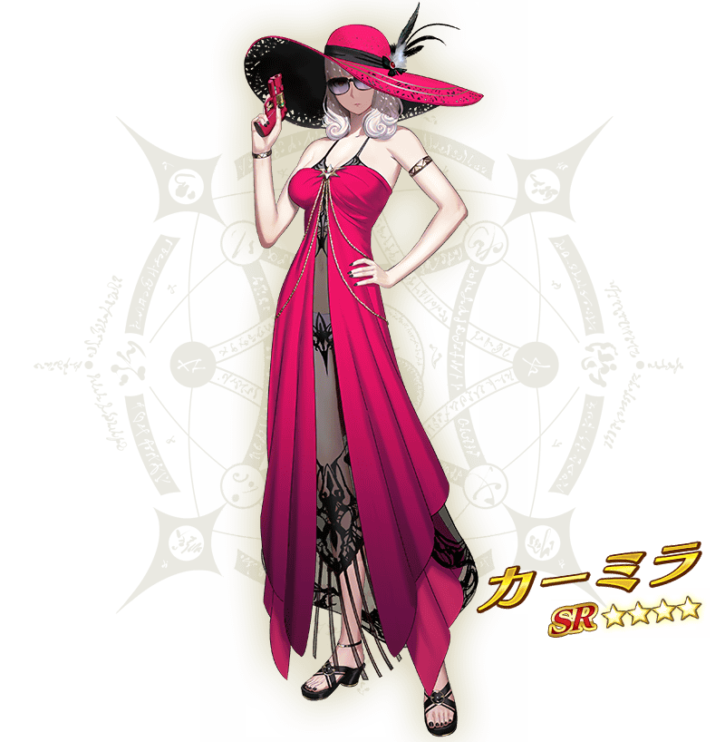

- 8/3
- 【來自迦勒底廣報局】關於在「Fate/Grand Order」開發者對談發表的新情報
感謝您使用「Fate/Grand Order」。
2019年8月3日(六)在「Fate/Grand Order Fes. 2019 ～迦勒底パーク～」進行的「Fate/Grand Order」開發者對談，發表了有關智慧型手機向FateRPG「Fate/Grand Order」的新情報。
以下介紹一部份新情報。
※本頁面皆為開發中圖片。會有與實際圖片相異的情況。
◆期間限定泳裝活動2019近日舉辦決定！◆
發表了期間限定泳裝活動2019自8月中旬(預定)舉辦。
拉斯維加斯為舞台，敬請期待從者們編織的夏日物語！
■活動舉辦預定
2019年8月中旬
■活動參加條件
滿足以下條件的御主才能參加
・通過「特異點F 炎上汙染都市 冬木」
◆介紹一部份在期間限定泳裝活動2019登場的從者！◆
介紹在預定8月中旬舉辦的期間限定泳裝活動2019登場的「★5(SSR)宮本武藏」「★4(SR)刑部姬」「★4(SR)卡米拉」。並且，也介紹「★5(SSR)宮本武藏」寶具演出！
在「Fate/Grand Order」官方網站內的公告中，以影片公開寶具演出，敬請確認。

◆靈衣開放權全3種新登場！◆
期間限定泳裝活動2019中，「★5(SSR)梅林」「★4(SR)齊格飛」「★3(R)風魔小太郎」新的靈衣開放權，全3種登場！
以上是在「Fate/Grand Order」開發者對談發表的一部份新情報。
今後也請多多指教「Fate/Grand Order」。